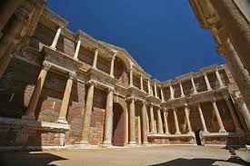

Sidas Antik Kenti, Manisa’ nın tarihini içinde gizleyen antik kent Saittai ismiyle de bilinmektedir. Demirci ilçesinin güneyinde, İcikler Köy merkezine sadece 5 km uzaklıkta konumlanmaktadır. Bu kentin Lidyalılara ait olduğu ve Roma döneminde imar gördüğü için de önemli bir merkez olduğu bilinmektedir. Yaşamın olduğu zamanlarda önemli roller üstlenen antik kente Türkler anlamı ise güzel, kutlu orman anlamlarına gelen Sidas ismini vermiştir.

 "Manisa"ya dönmek için basın
"Manisa"ya dönmek için basın